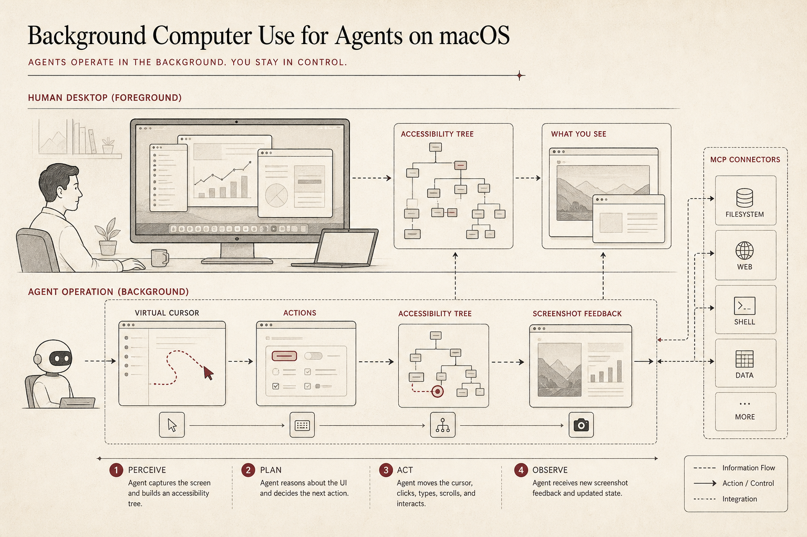

AI-native Computer Use: A Best Practice for Background App Operation in the Agent Era
Open Claudex Computer Use is an open macOS execution layer for agents that need to inspect and operate real apps without taking over the user's foreground cursor.

TL;DR
GitHub: OpenCodexLabs/open-codex-computer-use.
Computer use should not mean that an agent hijacks the user's mouse, blocks the desktop, and leaves no clear observation trail. A better default is background computer use: the agent operates through a local execution layer, sees app state through screenshots and Accessibility, performs actions, and returns post-action state.
The key shift is from "agent controls my computer" to "agent has its own visible lane for app operation."
Why this exists
Agents are no longer limited to text files and terminals. They need to use browsers, note apps, settings panels, enterprise tools, calendars, dashboards, and local utilities. The problem is that the human desktop was not designed for autonomous co-workers.
If an agent uses the same mouse and keyboard as the human, the experience is fragile. The user cannot keep working. The agent may lose track of what it did. The recording may be hard to trust. And when a WebView app exposes weak accessibility information, recovery becomes even harder.
Open Claudex Computer Use treats desktop control as an execution layer problem. The agent needs a reliable loop: observe the app, choose an action, perform the action, and observe the result.
What the repo provides
The repository focuses on a local macOS MCP server and an agent-facing tool surface. It is not a complete agent product; it is the part that lets an agent interact with real apps.
| Layer | What it provides | Why it matters |
|---|---|---|
| Observation | Screenshot plus Accessibility tree. | The agent sees both pixels and semantic UI structure. |
| Action | Click, scroll, drag, keyboard input, text entry, and accessibility actions. | The agent can operate native apps, not just web pages. |
| Feedback | Post-action state after every operation. | The loop can recover instead of assuming the action worked. |
| Visibility | App-aware virtual cursor and demo-friendly traces. | The user can understand what the agent is doing. |
The product value
The value is not just "automation." Traditional desktop automation usually assumes a fixed script. Agent computer use needs a perception-action loop. It needs to inspect the current state, decide what is possible, try an action, and adapt when the UI changes.
That makes the execution layer important. A good computer-use layer should make agent actions observable, recoverable, and local. It should give the agent enough structure to act, while keeping the human in control of the real machine.
How it fits AI-native workflows
In AI-native software work, the boundary between code and UI keeps moving. Sometimes the agent should edit a file. Sometimes it should click a setting. Sometimes it should verify a browser preview, operate a local app, or collect evidence from a tool that has no clean API.
Open Claudex Computer Use gives those UI tasks a shared execution lane. Instead of each agent inventing its own desktop-control hack, the harness can call a local MCP server that speaks in app states, actions, and feedback.
When to use it
| Use it when | Be careful when |
|---|---|
| The task requires native macOS app operation. | The app is self-drawn or exposes weak Accessibility structure. |
| You want local computer use instead of a cloud desktop. | The action has security, payment, or account-changing consequences. |
| You need demos with visible agent actions. | A stable API exists and is safer than UI control. |
Final recommendation
The agent era needs a clean distinction between human foreground work and agent background work. If the agent must use real apps, it should do so through an explicit observation-action-feedback loop.
Open Claudex Computer Use is a best-practice building block for that loop: local, visible, app-aware, and designed for agent harnesses.